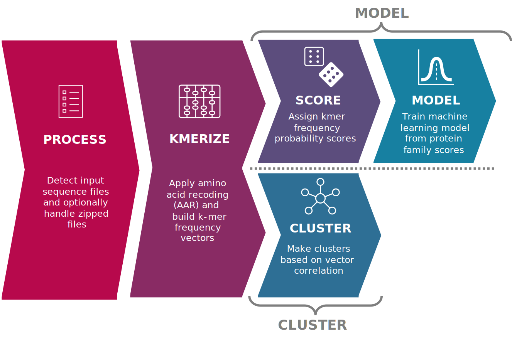

Snekmer: Reduced K-mer Encoding for Protein Sequences
Snekmer is a software package designed to reduce the representation of protein sequences by combining amino acid reduction (AAR) with the kmer approach. Based on the AAR-kmer representations, Snekmer subsequently (1) clusters sequences using various unsupervised clustering algorithms, (2) generates supervised machine learning models, or (3) searches sequences against pre-trained models to determine probabilistic annotations.
{kind=link}
There are 3 operation modes for Snekmer: cluster, model, and search.
Cluster mode: The user supplies files containing sequences in an appropriate format (e.g. FASTA). Snekmer applies the relevant workflow steps and outputs the resulting clustering results in tabular form (.CSV), as well as the cluster object itself (.cluster). Figures are also generated (e.g. t-SNE, UMAP) to help the user contextualize their results.
Model mode: The user supplies files containing sequences in an appropriate format (e.g. FASTA). Snekmer applies the relevant workflow steps and outputs the resulting models as objects (.model). Snekmer also displays K-fold cross validation results in the form of figures (AUC ROC and PR AUC curves) and a table (.CSV).
Search mode: The user supplies files containing sequences in an appropriate format (e.g. FASTA) and the models they wish to search their sequences against. Snekmer applies the relevant workflow steps and outputs a table for each file containing model annotation probabilities for the given sequences.